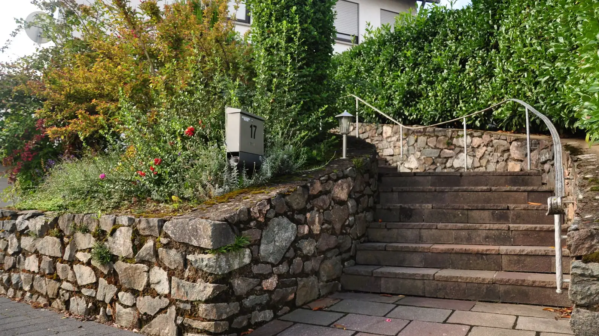
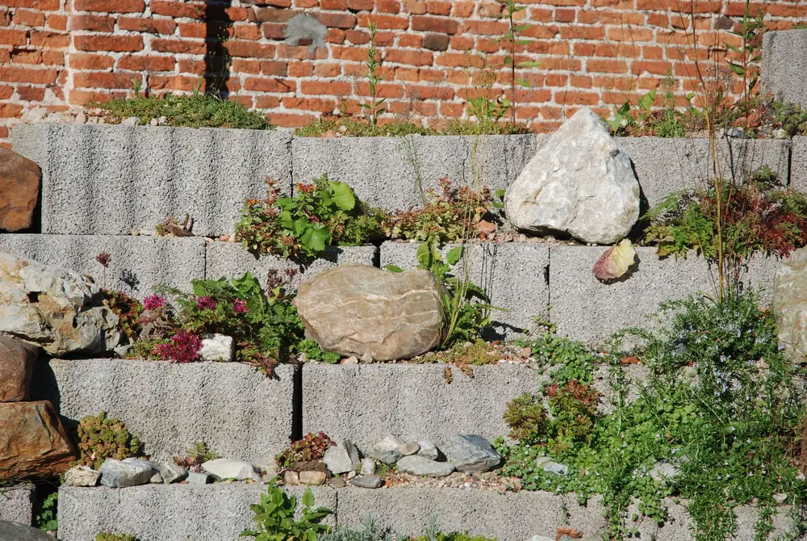
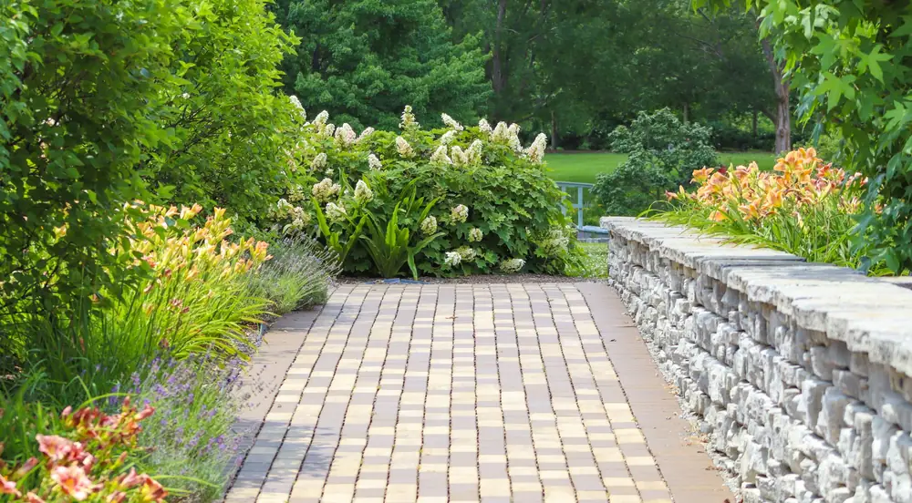
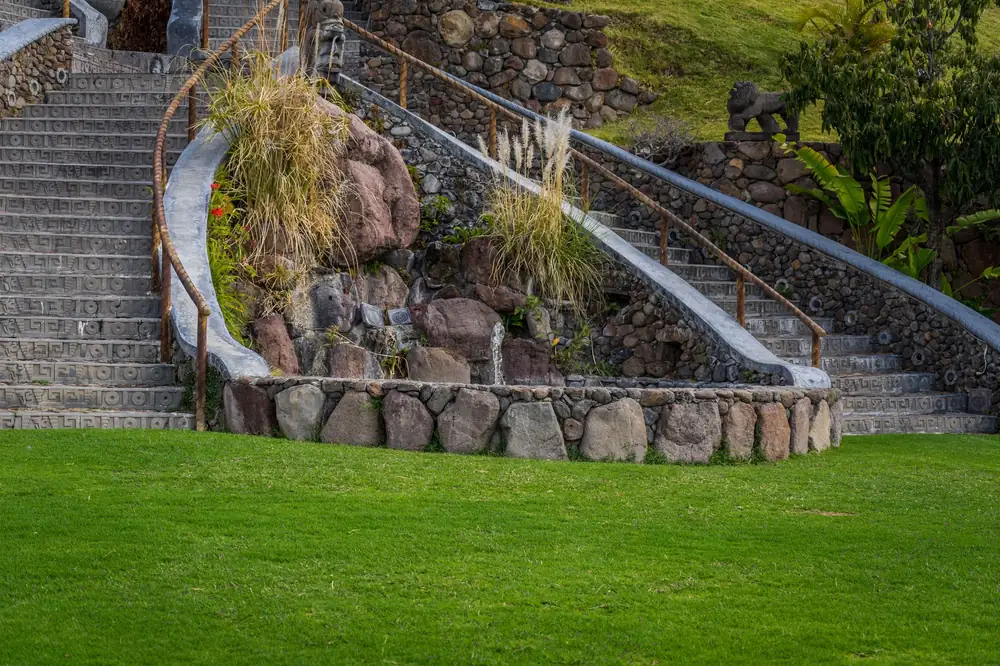

Gartenbau in Mainz, auch wenn kein Bagger in den Hof passt.
Unser Betrieb sitzt in Wiesbaden, für Gartenbau in Mainz fahren wir einfach über den Rhein. Wir pflastern, mauern, verlegen Rollrasen und pflanzen, im Reihenhausgarten in Gonsenheim genauso wie auf dem Neubaugrundstück in Ebersheim.
Was ein Garten in Mainz kostet.
Richtwerte inkl. 19 % MwSt., Material und Arbeit. Den genauen Preis bestimmen Boden, Zufahrt für Maschinen und die Menge an Aushub, die abgefahren werden muss.
- Rollrasen15 bis 30 € pro m²
- Pflaster mit Unterbau60 bis 170 € pro m²
- Staudenbeet40 bis 90 € pro m²
- Natursteinmauer bis etwa 80 cm Höhe250 bis 450 € pro laufendem Meter
Worauf es in Mainzer Gärten ankommt.
Mainz hat sehr unterschiedliche Grundstücke: enge Höfe in der Neustadt, Reihenhausgärten in Gonsenheim und Bretzenheim, Neubaugrundstücke am Stadtrand.
Wenig Platz, schmaler Zugang
In der Neustadt und der Altstadt kommt oft kein großer Bagger in den Garten. Wir planen dann mit Minibagger, Motorschubkarre und Big Bags, damit nicht alles von Hand getragen werden muss.
Niederschlagswasser wird getrennt abgerechnet
In Mainz rechnet der Wirtschaftsbetrieb Schmutz- und Niederschlagswasser getrennt ab. Ob eine Versickerung vor Ort den Beitrag senkt, klären wir für Ihr Grundstück mit dem Wirtschaftsbetrieb Mainz. Gefälle und Versickerung planen wir in jedem Fall von Anfang an mit.
Neubau am Stadtrand
In Neubaugebieten am Stadtrand, etwa in Ebersheim oder Hechtsheim, fangen viele Gärten bei null an: Bauschutt raus, Mutterboden rein, dann Wege, Terrasse und Rasen. Wir machen das in einem Zug.
Wo das Gelände springt.
Am Hang kommt selten eine Arbeit allein: erst die Mauer, dann ein fester Weg und Stufen, auf denen man nicht ins Rutschen kommt.



Gärten, wie wir sie in Mainz bauen.
Vom Innenhof in der Neustadt bis zur Böschung in Finthen.
- Mainz-Neustadt
Innenhof statt Abstellfläche
Betonfläche aufgebrochen, Pflanzinseln mit Gräsern, Sitzplatz aus Klinker. Das Material kam in Big Bags durch die Hofeinfahrt.
- Mainz-Hechtsheim
Garten nach dem Einzug
Rollrasen auf frischem Mutterboden, ein Pflasterweg zur Garage und eine Hecke als Sichtschutz zum Nachbarn.
- Mainz-Finthen
Böschung mit Trockenmauer
Den Hang hinter dem Haus mit einer Trockenmauer abgefangen, oben eine ebene Rasenfläche.
- Mainz-Mombach
Vorgarten neu
Pflasterfläche verkleinert, Beet und Hecke statt Kies, neuer Weg zur Haustür.
So entsteht ein Garten in Mainz.
Vom ersten Foto bis zur Abnahme haben Sie einen festen Ansprechpartner. Vor dem Angebot kommen wir einmal aufs Grundstück, Rückfragen klären wir per E-Mail oder Telefon.
- Kurz beschreiben
Über das Formular: was gemacht werden soll, ungefähre Größe, gern ein paar Fotos.
- Erste Preisspanne
Per E-Mail bekommen Sie eine Spanne und unsere Rückfragen, zum Beispiel zum Zugang.
- Grundstück ansehen
Wir messen auf, prüfen Boden und Zufahrt und schicken das verbindliche Angebot mit getrennt ausgewiesenem Arbeitsanteil.
- Bauen in Abschnitten
Erst Erdarbeiten und Wege, dann Pflanzen und Rasen. Zum Schluss gehen wir den Garten gemeinsam ab.
Fragen zum Gartenbau in Mainz.
Was kostet ein neuer Garten in Mainz?
Das hängt vor allem von Fläche und Material ab, dazu kommen Boden und Zugang. Ein kleiner Reihenhausgarten mit Terrasse, Rasen und einem Beet liegt oft im mittleren vierstelligen Bereich, ein ganzer Neubaugarten mit Einfahrt deutlich darüber. Mit dem Gartenplaner auf der Startseite sehen Sie eine Spanne für Ihre eigene Aufteilung.
Arbeiten Sie auch in engen Höfen in der Mainzer Neustadt?
Ja. Für enge Höfe planen wir mit kleinen Maschinen und Material in Big Bags. Wichtig ist, dass wir vorher wissen, wie breit der Zugang ist. Ein Foto von Tor oder Durchgang hilft uns bei der Einschätzung. Muss Material durch das Haus getragen werden, sagen wir Ihnen das vorher, damit Sie wissen, was es kostet.
Gilt der Steuerbonus auch für den Garten am Neubau?
Arbeiten am Neubau, die vor der Fertigstellung des Hauses anfallen, zählen nicht. Was danach kommt, kann unter § 35a Abs. 3 EStG fallen: 20 Prozent der Arbeits-, Fahrt- und Maschinenkosten, höchstens 1.200 Euro pro Haushalt und Jahr, wenn Sie den Rechnungsbetrag überweisen. Ob das bei Ihnen gilt, entscheidet Ihr Finanzamt.
Wie schnell können Sie anfangen?
Im Winter planen wir, gebaut wird meist von März bis November. Frühjahrstermine sind meist schnell vergeben. Wenn Sie jetzt anfragen, können wir den Plan im Winter fertig machen und im Frühjahr direkt loslegen. Kleinere Arbeiten wie ein Beet oder Rollrasen passen oft auch kurzfristig dazwischen.
Lässt sich alles per E-Mail klären?
Ja. Sie schicken uns über das Formular oder per E-Mail eine kurze Beschreibung und die ungefähren Maße und bekommen eine erste Einschätzung per E-Mail. Für das verbindliche Angebot kommen wir einmal aufs Grundstück. Danach klären wir Rückfragen und Termine gern schriftlich. Zur Abnahme gehen wir den Garten aber gemeinsam ab.
Weitere Leistungen und Orte
Am Anfang reicht eine E-Mail.
Schreiben Sie uns, was in Ihrem Garten gemacht werden soll und wie groß er ungefähr ist. Ein Foto vom Zugang hilft uns, den Aufwand bei engen Höfen richtig einzuschätzen.